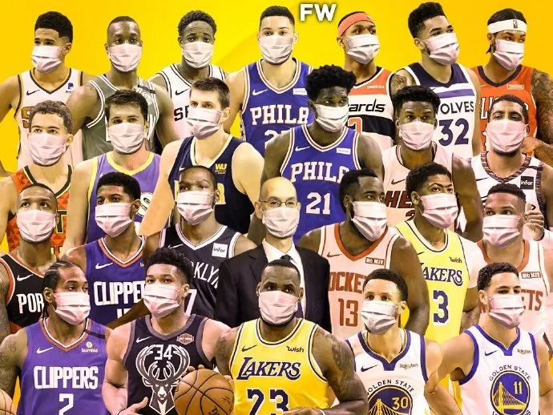

日经大跌1050点 东京都前知事批安倍政府应对迟滞
原文链接 备份链接 【财新网】（驻东京记者 陈立雄）3月9日，受新冠疫情对全球市场信心带来的冲击，日经指数大跌1050.99点，跌幅达5.07%，收于19698.76点，达1年2个月以来的新低，还跌破了2万元的关卡。日经盘中最多一度下跌 …

2020年本可以成为国际体坛“最好的时代”。但随着新冠疫情在全球肆虐，国际体坛或将迎来“最坏的时代”。
近日，NBA、F1、欧洲杯、欧洲足坛五大联赛纷纷按下“暂停键”，全球瞩目的2020年东京奥运会或将面临“难产”。无论取消抑或延期，这些国际赛事都将承受巨额损失：欧洲杯或损失数十亿欧元；NBA本赛季剩下250多场比赛，光是门票收入损失就超4亿美元；而奥运会的损失更是“难以估量”。
此前有统计显示，全球体育产业市场规模在2018年达到4885亿美元，预计将于2022年达到6141亿美元。“对全球体育产业来说，疫情以及引发的股灾，百年一遇的大停摆，线下经营场景的崩溃，打击是非常致命的。体育联盟与联赛方面，被影响到的球员薪资、球队破产潮、球队转会预算削减潮，都会在未来数年里影响到体育世界的版图。”体育界资深人士向记者表示。
3月13日，世界卫生组织（WHO）正式将不断蔓延的新冠肺炎疫情定性为“全球大流行”（Pandemic），如同给全球体育下了“最后通牒”。此轮全球赛事“停摆风波”将何去何从？近日，记者多方采访国际奥委会、欧足联、世卫组织等国际权威机构及国内外体育界资深人士，对当前形势进行了分析。

欧洲杯：或损失数十亿欧元
“保障球迷、球员和相关人员的健康是我们的第一要务。作为欧洲足球主管部门，我们主导了这一切的进程，做出了巨大的牺牲。”欧足联（UEFA）向记者表示。
3月17日，欧足联正式宣布将2020欧洲杯延期至2021年6月11日至7月11日举行。
对于欧足联和欧洲足球而言，延期的代价无疑是巨大的。据福布斯报道，欧足联计划在2020年欧洲杯上获得25亿欧元的收入，预计利润将超过10亿欧元。
记者了解到，为纪念欧洲杯60年，本届赛事原计划采取无主办国的巡回赛方式在欧洲11个国家12座城市举行。欧洲杯赛事对于举办城市有着显著刺激经济作用：一座球场举办四场比赛，预计能为当地带来超过1亿欧元收入。
上周末，欧洲足球五大联赛（意甲、法甲、西甲、英超和德甲）以及欧战赛事早于欧洲杯全部停摆。至此，欧洲足坛纷纷“偃旗息鼓”。
据各国媒体粗略估算，综合转播、赞助、门票来看，如果联赛就此结束，英超会损失约8.25亿欧元，西甲、德甲、意甲都差不多会损失7亿欧元。据《每日邮报》报道，如果7月底前没有完成比赛，英超将面临赔付近33亿欧元电视转播合同违约金风险。
英国顶尖体育数据公司Sportcal赛事主管克里斯托弗告诉记者：“疫情持续恶化，除影响短期赛事收入外，更重要的是影响欧洲经济，从而对欧洲体育市场造成长期深层次影响。目前还无法准确预估疫情恶化造成的损失，但起码有数十亿欧元。”
值得注意的是，欧洲杯延期将导致一系列连锁反应，原定于2021年夏天在中国举行的2021年世俱杯也将面临延期风险。而改革后的世俱杯是国际足联（FIFA）努力打造的“吸金”平台，接下来国际足联与欧足联势必还有一番角力。
NBA：每场比赛损失超百万美元
事实上，作为世界上最成熟的商业体育联盟之一，NBA很早就觉察到新冠疫情的威胁。但其背后庞大的商业利益如同“巨手”一般，影响着NBA的最终抉择。
疫情很早就在美国迅速扩散。3月7日，NBA才首次提到“空场比赛”和“停摆”可能性。3月11日，旧金山市政府呼吁勇士队鉴于疫情蔓延取消比赛，然而勇士并没有听取建议。
直到近日，犹他爵士队明星中锋戈贝尔被确诊为新冠肺炎病例后，NBA才最终被迫作出停赛决定。有外媒如此评价戈贝尔：“作为联盟最佳防守球员的他，以一己之力防住了联盟。” 目前，加上刚被确诊的篮网队球星凯文·杜兰特，NBA已有7人感染新冠病毒。

图片来源：新浪微博@新浪NBA
赛事停摆已经令NBA这艘豪华战舰在疫情风暴中“摇摇欲坠”。据《福布斯》公布的数据，NBA在2018-19赛季总收入达88亿美元，同比增长10%，其中门票收入达19.4亿美元。停摆最直接影响的就是门票收入。
粗略推算，联盟30支球队的平均门票收入为6467万美元，平均到41个主场比赛，每场球是158万美元，这些钱足以铺满斯台普斯的地板。而从球员角度来看，以勒布朗·詹姆斯为例，洛杉矶湖人队每少打一场比赛，这位NBA顶级球星就会损失约40万美元。
腾讯体育表示，门票损失加电视转播和球衣赞助方面的损失，NBA暂停剩余赛季比赛，最终损失金额极有可能超过10亿美元。
一直以来，电视转播收入支撑起NBA收入的“半壁江山”。停摆意味着失去电视转播合同收入，给NBA带来巨大的财政风险。
比如，2014年底，ESPN、TNT就和NBA达成从2016-2017赛季开始持续9年高达240亿美元的“天价”转播合同，年均近26.7亿美元。此外，腾讯体育是国内唯一获NBA官方授权的转播机构。腾讯刚与NBA续约至2025年夏天，合同金额约为5年15亿美元左右。目前，关于新冠疫情是否属于不可抗力因素范畴以及NBA联盟被合同各方追责之可能尚无定论。
美国资深体育人约翰·霍林格认为：“除开门票，球队周边商品，NBA球队经营的餐饮等业务也将受到影响，各队整体收入会大幅下滑。一旦完全停摆，NBA球队连转播收入这最后一根救命稻草都会失去。”
氪体创始人骆达告诉记者：“经济损失是一道数学题。然而球员健康和后续恢复则是两个问答题。疫情是否会影响球员职业生涯？NBA恢复到全盛需要多久？这些问题同样揪心。”
从各方报道来看，NBA和球队仍没有打算就此放弃本赛季。据ESPN消息，目前联赛最可能的恢复时间是6月中下旬。也有专家指出，不排除之后直接开始季后赛可能。
东京奥运会：日本经济“救命稻草”
目前，东京奥运会本土赞助收入就超过33亿美元，几乎是北京奥运会三倍左右，也远超近两届FIFA世界杯赞助金额，打破了历届奥运会赞助纪录。但是，全球新冠肺炎的严峻形势，令东京奥运会前景“阴云密布”。
3月17日晚间，日本首相安倍晋三再次强调奥运会和残奥会将如期完整举行。然而，日本上周一项民调显示，45%的受访者反对奥运会如期举行。
日前，东京奥组委理事高桥治之提出延期至2022年举行，届时夏季奥运会和冬季奥运会同年举办，2022年将成为引人注目的“奥运年”。据了解，已有多名奥组委理事表示同意。而东京奥组委理事会也计划于30日召开会议讨论该问题。骆达向记者表示：奥运延期举行，或将导致奥运聚集效应不再，4000万人次的旅游观光消费化作乌有，或大打折扣。同时还可能和其他国际比赛赛程发生冲突。

截自东京奥运会官网
诚然，东京奥运会的一举一动，都影响着日本的经济与国民信心。面对外界对于新冠疫情的担忧，日本政府多次坚称奥运会将如期举办。
“日本经济处于一个衰退边缘，奥运会无疑是一个强有力的刺激。取消奥运会将对日本经济、社会产生全方位的影响。对运动员、相关国际体育组织以及奥林匹克这项运动的影响更加深远。”克里斯托弗向记者表示。
自2013年申奥成功后，日本花了7年时间筹备奥运会，有关2020东京奥运会的重大投资项目，逐一上马。目前已至少投入262亿美元，用于场馆建设、配套设施升级等。奥运会一旦取消或延期，后期运营可能无法获得与预期相符的资金回流速度，加上运营成本高企，许多场馆有可能变成“负资产”，当地政府将欠下银行的高额贷款本息。
某种程度上，奥运会被视作日本经济的“救命稻草”。安倍晋三曾称：“要让奥运会成为扫除15年通货紧缩和经济衰退的触发器。”据东京都政府估算，从申办成功的2013年至奥运会举办10年后的2030年，日本全国总计经济效益将达32万亿日元左右（约3000亿美元）。
不过，东京奥运会取消或推迟与否，其最终决定权还在国际奥委会（IOC）手里。国际奥委会告诉记者：“距离奥运会开幕还有19周左右的时间，我们对于成功如期举办东京奥运会的立场没有改变。我们与世卫、东京奥组委、日本政府保持着密切沟通。我们将继续遵循世卫组织关于疫情防控的建议。”
国际奥委会表示：“当下重要任务之一是解决东京奥运会资格赛配额等问题。我们将和各国际体育单项组织沟通，灵活应对解决这一问题，使资格赛配额公开、公正、公平。”
此前有统计显示，全球体育产业市场规模在2018年达到4885亿美元，预计将于2022年达到6141亿美元。而据普华永道去年底发布的《2019体育行业调查报告》，未来3到5年全球体育市场预计增长率为6.4%。
而世卫组织向记者透露：“我们仍然处于新冠病毒全球爆发的初期。在此阶段，我们无法预测本次全球性大流行病将持续多久。”这意味着，疫情对于全球体育产业的冲击还将更加持久和深远。
骆达表示：“对全球体育产业来说，疫情以及引发的股灾，百年一遇的大停摆，线下经营场景的崩溃，打击是非常致命的。体育联盟与联赛方面，被影响到的球员薪资、球队破产潮、球队转会预算削减潮，都会在未来数年里影响到体育世界的版图。”
世卫组织实时统计数据显示，截至欧洲中部时间18日18时（北京时间19日1时），全球新冠肺炎确诊病例累计达到207860例，死亡病例8657例，已报告病例的国家和地区达166个。
来源：每日经济新闻（ID：nbdnews）
记者：谢陶


推荐阅读

点击大图 |为什么美国要“直升机撒钱”？

点击大图 | 钟南山：对输入病例要高度警惕，疫情传播第一波传染性很强！****

原文链接 备份链接 【财新网】（驻东京记者 陈立雄）3月9日，受新冠疫情对全球市场信心带来的冲击，日经指数大跌1050.99点，跌幅达5.07%，收于19698.76点，达1年2个月以来的新低，还跌破了2万元的关卡。日经盘中最多一度下跌 …
原文链接 备份链接 按照原计划，今年奥运圣火传递活动将在3月12日从希腊开始，3月26日来到日本，7月24日东京奥运会将开幕，这些安排会否受到影响，取决于日本政府对于疫情的控制 2020年2月15日，东京奥运会圣火传递大使石原里美（右）在 …
原文链接 备份链接 澎湃新闻记者 刘栋 过去的这个周末，日本的新冠肺炎疫情开始出现一系列变化。 2月16日，日本首相安倍晋三紧急召开专家组会议。厚生劳动大臣加藤胜信在会后的记者会上表示，目前日本的新冠疫情“已经进入到一个新的阶段”。 “我 …
原文链接 备份链接 日本国内新冠病毒感染者近日连续增多，一些地方相继报告了无法确定感染途径的病例。日本厚生劳动省昨天（17日）表示，停靠在日本横滨港的“钻石公主”号邮轮又新增了99名新冠肺炎病例，累计已达454例。鉴于形势日益严峻，日本 …
原文链接 备份链接 体坛周报特约记者赵兴圣安东尼奥报道 一周前，雷霆和爵士的比赛开始前临时被叫停，现场解说宣布比赛延期并请球迷离场。 没过多久，爵士中锋戈贝尔被爆出确诊新冠病毒。随即，NBA宣布无限期停赛。 当时，马刺的主教练波波维奇正在 …